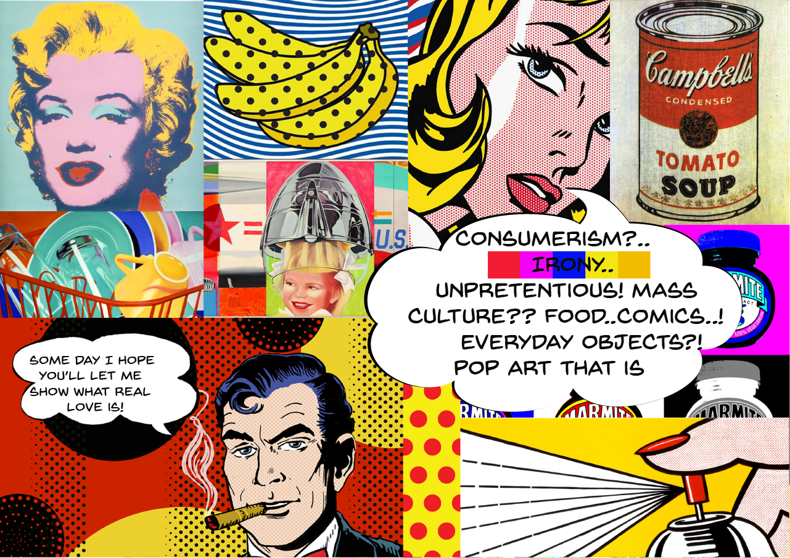
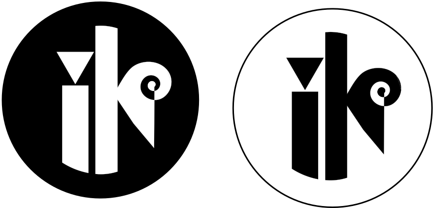

Theme 01: Basic Web
Commencement of studies exam
During the first week, called Content and communication, I had to create content, design and find image assets for my first website based on given art style.
My first moodboard 
See the whole document here 01.01.02 Project document
During the second week, called Basic HTML-CSS, I had to code my first mobile site based on content, design and assets from previous week. Have a look on your mobile device 01.02.01 Mobile website
User interface design
During this week I had my first go with sketching and creating paper prototypes for both mobile and desktop, creating a high-fidelity prototype, a style tile, my logo and conducting a user test (trunk test).
My first logo was finally born 
Have a look at my design and process document 01.03.01 Design and process document
Responsive web design
For this project I had to design and build my first responsive website. It was quite a challenge to familiarize myself with the grid and media queries. The content regards Pop Art style as a continuation a previous project for our commencement of studies exam. Have a look 01.04.01 Responsive website
Basic Redesign-Group Project
For this project we had to redesign a really bad website. I found a good website from which we could draw inspiration. I did the user testing before and after redesigning (5sec test, trunk test), wrote a test report, and for our presentation, I summarized test results into ppt and talked about bad design principles along with "before" test results.
01.05.03 Link to redesigned website
P.S. The password is the same as was decided by the teachers during the project.